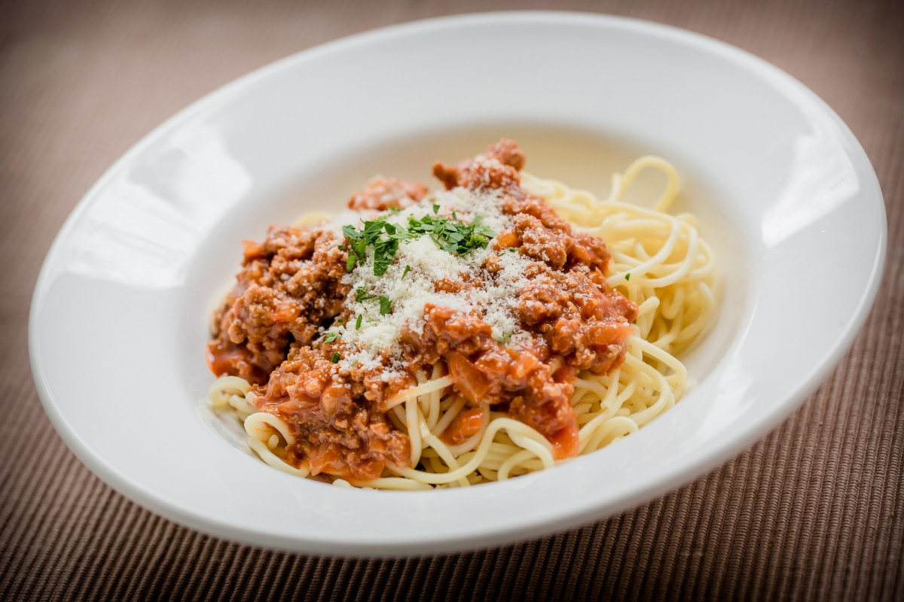

Pasta Bolognese
Home

Description
This pasta bolognese uses a slow cooked meat and tomato base that builds a steady flavor. The sauce becomes thick and holds well on the pasta. It stays simple and works for daily meals.
The texture stays consistent because the beef cooks evenly and blends with the tomato sauce. It heats well and fits meal prep.
Ingredients
- Ground beef
- Onion chopped
- Garlic minced
- Olive oil
- Tomato sauce
- Tomato paste
- Salt
- Black pepper
- Italian seasoning
- Pasta
- Parmesan cheese
Steps
- Cook the pasta in salted water and set it aside.
- Warm olive oil in a pan and add onion and garlic.
- Add the ground beef and cook until browned.
- Add tomato sauce, tomato paste, salt, pepper, and Italian seasoning.
- Simmer until the sauce thickens.
- Add the pasta to the sauce or serve the sauce on top.
- Add Parmesan cheese and serve.